Efficient Video Inference with Spatiotemporal Knowledge
DB Seminar | Feb 26, 2025
Chanwut (Mick) Kittivorawong
Overview
Motivation
* Challenges with video inferencing.
Background + Prior Work
* Basic video processing tasks.
* Prior work to accelerate video processing.
Spatialyze
* A Geospatial Video Analytics System.
* Programming Model & Optimization.
Ongoing Research
* Toward more general solutions.
Motivation
Video data is abundant, and its volume keeps increasing.
Hours of video uploaded to YouTube every
minute as of February 2022 [Graph], YouTube, & Google, June 22, 2022. [Online]. Available:
https://www.statista.com/statistics/259477/hours-of-video-uploaded-to-youtube-every-minute
Motivation
Variety of video data sources.
With real-world use cases.
Finding cars at an intersection.
Aggregate vehicle statistics on traffic intersections.
Building a statistical model on vehicles coordination.
Challenge #1
The overwhelming diversity of interfaces for tools for video analytics.
Yunhao Du, Zhicheng Zhao, Yang Song, Yanyun
Zhao, Fei Su, Tao Gong, and Hongying Meng. 2023. StrongSORT: Make DeepSORT Great Again. IEEE
Transactions on Multimedia 25, (2023), 8725-8737. DOI:https://doi.org/10.1109/TMM.2023.3240881
Jaeho Bang, Gaurav Tarlok Kakkar, Pramod Chunduri, Subrata Mitra, and Joy Arulraj. 2023. Seiden:
Revisiting Query Processing in Video Database Systems. Proc. VLDB Endow. 16, 9 (May 2023),
2289-2301. https://doi.org/10.14778/3598581.3598599
Main Research Question
How can we build an end-to-end system for efficiently processing video queries?
Background
Video analytics tasks and their bottleneck (Detection Query).
Background
Video analytics tasks and their bottleneck (Tracking Query).
Prior Work
Most of existing optimization techniques are query-specific.
## Spatialyze
- An end-to-end geospatial video analytics system.
- Leverage spatiotemporal properties to sample only relevant frames.
## Ongoing Research
- Focus on video processing.
- Combine proxy models with spatiotemporal knowledge.
# Spatialyze
Issues with Spatialyze.
Video inference is slow.
Prior solutions come with significant trade-off of being query-restricted or domain-restricted.
We integrate spatiotemporal knowledge
and proxy model approach together to allow
both domain- and query-flexibility in video inference acceleration.
Prior Work: Proxy-based approach.
Basic Video Retrieval Query
Object Detector
Query Processor
WHERE COUNT(BUS) > 0
Query answer: Frame
49-77
NoScope (Kang, 2017)
Proxy Model
≅
Obj. Detector
+
Q. Processor
Query answer: Frame
50-75
Prior Work: Proxy-based approach.
Basic Video Aggregate Query
Object Detector
Query Processor
SELECT AVG(COUNT(CAR))
Query answer: 1.2 Cars
BlazeIt (Kang, 2019)
Proxy Model
≅
Obj. Detector
+
Q. Processor
Query answer: 1.25 Cars
How does a proxy model work?
Application of Proxy Models
## Upsides
- Adaptable to multiple domains.
- Fast to train and inference.
## Downsides
- Restricted to specific queries.
- Still expensive?
## Integration with Spatiotemporal Knowledge.
- Reduce the work of the oracle model instead of replace them.
- Can be applied with wider range of video analytics tasks.
My approach to accelerate object tracking
Recognized spatiotemporal properties of video data.
#### Some regions in a frame are irrelevant to the object of interest.
#### Consecutive video frames have temporal continuity.
#### Objects' movement patterns are region-specific.
Compress relevant regions from multiple video frames.
Localize proxy model execution.
Region-specific tracking rate.
Compress relevant regions from multiple frames
Speculation #1: Some regions in a frame are irrelevant to the object of interest.
Compress relevant regions from multiple frames
Speculation #1: Some regions in a frame are irrelevant to the object of interest.
Proxy Model
Query answer: Car detected
Proxy Model
Query answer: No car detected
Compress relevant regions from multiple frames
Speculation #1: Some regions in a frame are irrelevant to the object of interest.
CNN (stride=2, kernel=2x2x64x64)
128 x 128
64 x 64
32 x 32
16 x 16
8 x 8
4 x 4
2 x 2
1 x 1
Linear
64
64
1
Compress relevant regions from multiple frames
Speculation #1: Some regions in a frame are irrelevant to the object of interest.
Proxy Model
Compress relevant regions from multiple frames
Speculation #1: Some regions in a frame are irrelevant to the object of interest.
Compress
Detect
Decompress
Compress relevant regions from multiple frames
Speculation #1: Some regions in a frame are irrelevant to the object of interest.
On average, we compress
9.54
video fromes into a SINGLE object
detection execution
Localize proxy model execution
Speculation #2: Consecutive video frames have temporal continuity.
Proxy models are cheap to execute, but they are not free.
Frame 1-4
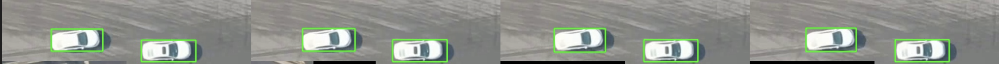
Localize proxy model execution
Speculation #2: Consecutive video frames have temporal continuity.
Proxy models are cheap to execute, but they are not free.
Frame i
Identified relevant pixel tiles (in blue) at frame i.
Next
Frame i+1
Only need to identify
the same patch (in blue)
and their neighbors (in orange) at frame i+1.
Localize proxy model execution
Speculation #2: Consecutive video frames have temporal continuity.
On average, we reduce
73%
of proxy model executions.
Localize proxy model execution
Speculation #2: Consecutive video frames have temporal continuity.
Runtime of proxy models in different sizes
Region-specific tracking rate
Speculation #3: Objects' movement patterns are region-specific.
Prior optimization techniques reduce tracking reates at the frame level.
Only capitalizing on temporal properties of videos.
Our optimization technique also leverages spatial prooperties of videos.
Region-specific tracking rate
Speculation #3: Objects' movement patterns are region-specific.
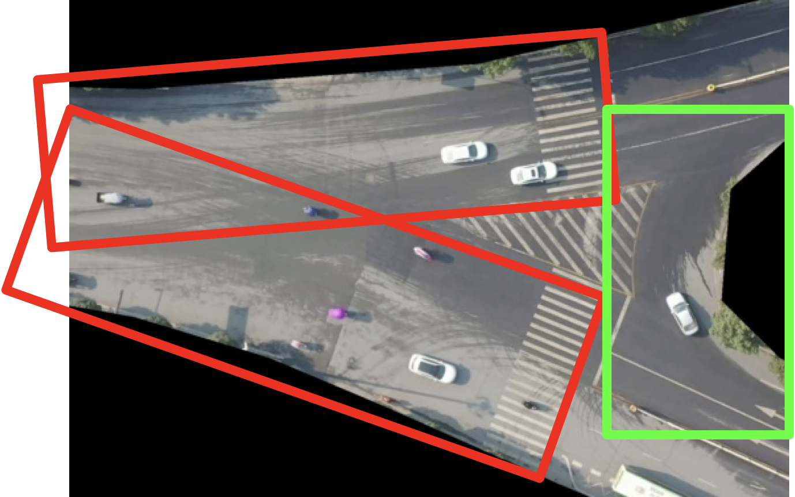
Speed Zone
Vehicles drive through the intersection at a high speed.
Slow Zone
Vehicles slow down when turning.
Region-specific tracking rate
Speculation #3: Objects' movement patterns are region-specific.
Slow Zone - tracking acc. with different frame skipping size 2, 4, 8, 16
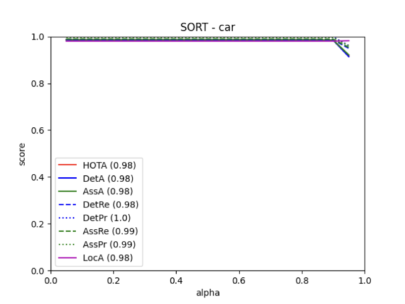
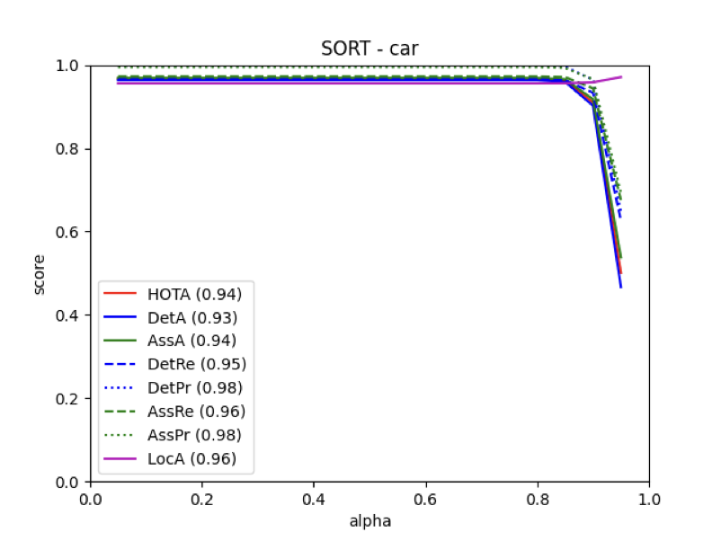
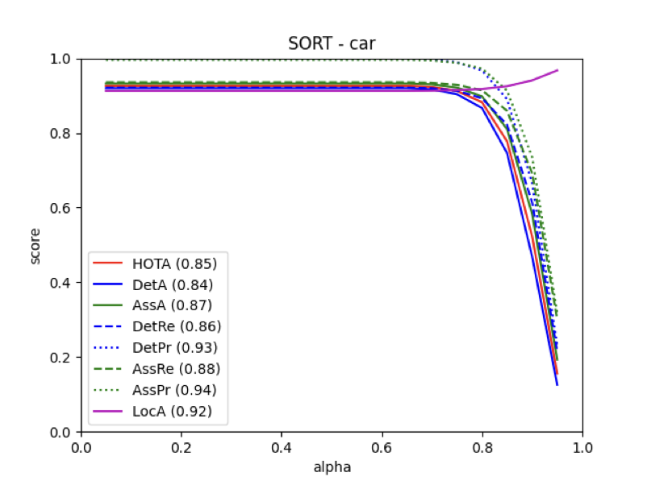
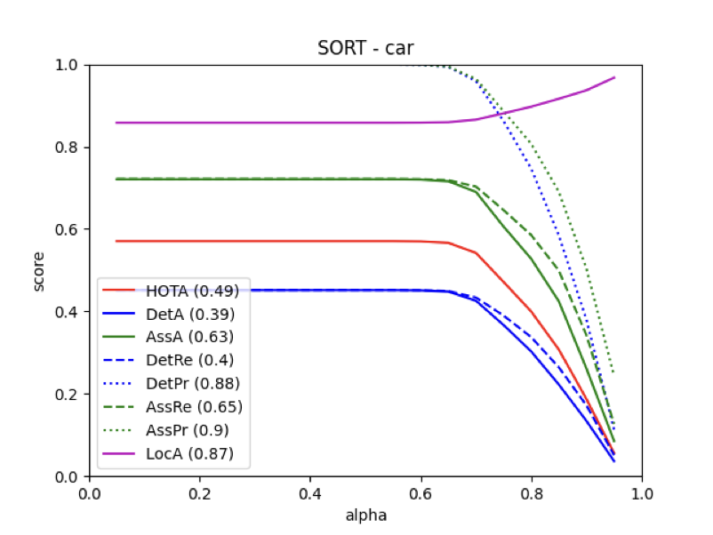
Speed Zone - tracking acc. with different frame skipping size 2, 4, 8, 16
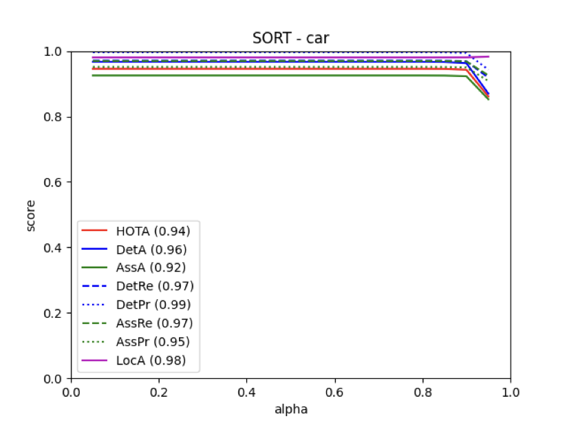
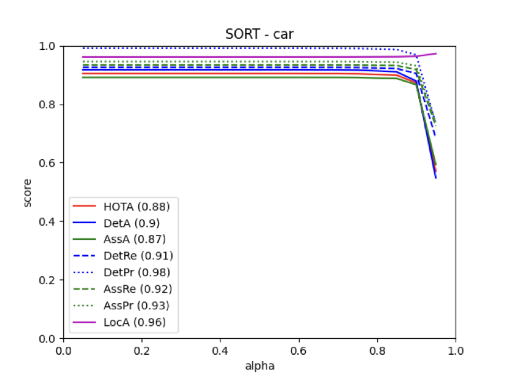
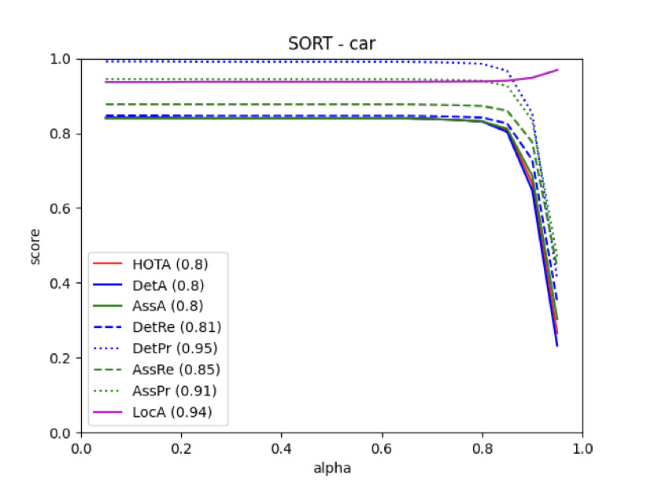
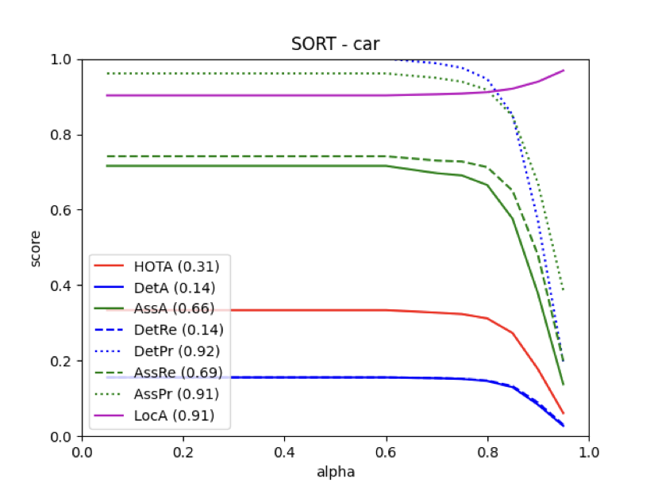
Region-specific tracking rate
Speculation #3: Objects' movement patterns are region-specific.
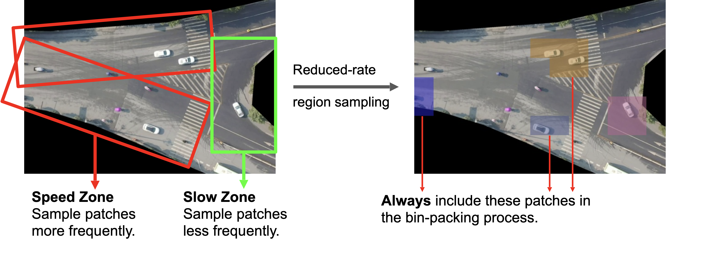
Region-specific tracking rate
Speculation #3: Objects' movement patterns are region-specific.
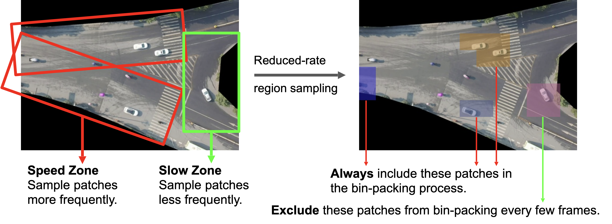
Summary of Evaluation
Compress relevant regions from 9.54 frames into one single object detection execution, on average.
Localize proxy model exeucution to reduce 73% of proxy model executions, on average.
Region-specific tracking rate helps further reduce the object detection and tracking cost.
We still do not have a complege evaluation as a more extensive benchmark regarding rutime-accuracy trade-off is needed.
Video inference is slow.
Prior solutions come with significant trade-off of being query-restricted or domain-restricted.
We integrate spatiotemporal knowledge
and proxy model approach together to allow
both domain- and query-flexibility in video inference acceleration.